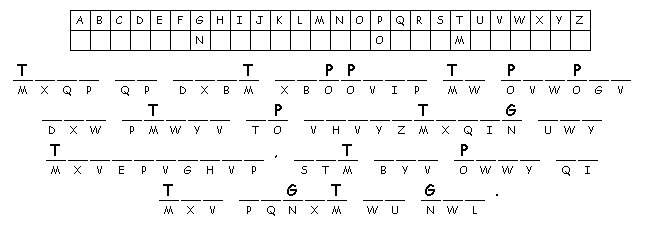

This Week: Hosea 11:1-11 and Psalm 107:1-9, 43 or Ecclesiastes 1:2, 12-14; 2:18-23 and Psalm 49:1-12, Colossians 3:1-11, Luke 12:13-21
Elementary School Pew-work
Unscramble the bolded words:
A rich man's farm produced a big ocpr _______ , and he said to himself, "What can I do? I don't have a place large enough to ortse _________ everything." Later, he said, "Now I know what I'll do. I'll tear down my nabrs _________ and build bigger ones, where I can store all my rngai _________ and other goods. Then I'll say to myself, `You have stored up enough good things to last for ersay _______ to come. Live it up! Eat, rndki _______, and enjoy yourself.' " But God said to him, "You fool! Tonight you will die. Then who will get what you have eordst _________ up?" "This is what happens to lppeeo _________ who store up everything for themselves, but are opro _______ in the sight of God."
1. What did
Jesus say was the wrong focus for
life?
__________________________________________________________________________
2.
Where did the rich man center his
life?
__________________________________________________________________________
3.
What value did the rich man's life
have?
__________________________________________________________________________
4. Why did God call the rich man a fool
__________________________________________________________________________

Created
by Puzzlemaker
at DiscoverySchool.com
Next week:Isaiah 1:1, 10-20 and Psalm 50:1-8, 22-23 or Genesis 15:1-6 and Psalm 33:12-22, Hebrews 11:1-3, 8-16, Luke 12:32-40